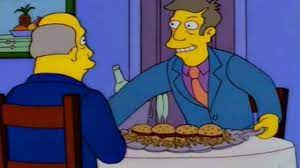

"Hamburguejas al Vapor"

Oh- ¡¿Aurora boreal?! ¿En esta época del año, a esta hora del día, en esta parte del país, localizada completamente dentro de su cocina?
Skinner: Si.
Chalmers: ¿Puedo verlo?
Skinner: No.
"Recetuli"
"Ingredientes"
- 500 gramos de carne molida
- Tiras de tocino
- Tajadas de queso cheddar
- Tajadas de jamón inglés
- Mayonesa
- Queso mozzarella
- pan de hamburguesa o el de tu preferencia
"Pasos"
- Para la salsa BBQ de la hamburguesa. En una olla a fuego medio colocamos todos los ingredientes que mencionamos anteriormente. Hay que mezclar muy bien para que no se pegue. Hay que dejarla por 30 o 40 minutos hasta que se integre por completo. Reservamos.
- Para la hamburguesa. En un recipiente agregamos la carne molida de tu preferencia con trozos pequeños de tocino. Añadimos, el ajo, cebolla, sal y unas cucharadas de la salsa que preparamos. Integramos muy bien. A la preparación, incluimos queso cheddar cortado en trozos pequeños.
- En una sartén caliente, agregamos el tocino y lo cocinamos muy bien hasta que bote su propia grasa. Ahí mismo agregaremos la carne de la hamburguesa que hemos dividido en porciones iguales.
- Cuando esté bien cocido, volteamos y agregamos un poco de queso mozzarella encima para que se derrita
Return to top
Return to main page